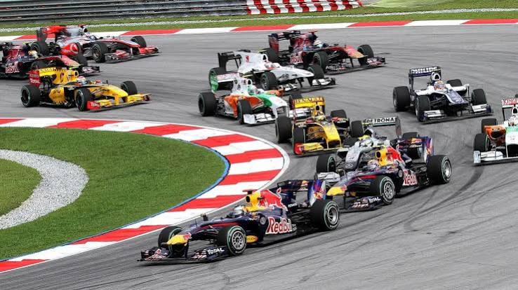
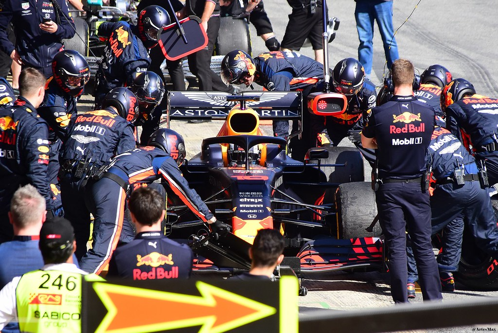
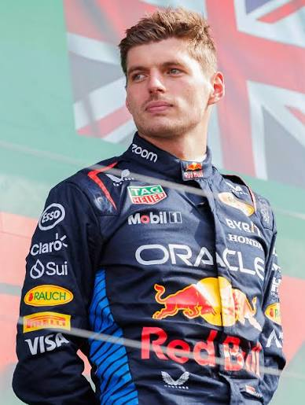

Disputa Milimétrica pelo Campeonato
As principais equipes trazem atualizações aerodinâmicas decisivas para a reta final.
O seu portal de telemetria, pilotos e bastidores da Fórmula 1.

As principais equipes trazem atualizações aerodinâmicas decisivas para a reta final.

Como equipes trocam quatro pneus em menos de 2 segundos sob pressão extrema.

Equipe: Oracle Red Bull Racing
Carro: RB22 | Número: #3
Tetracampeão mundial, conhecido pela agressividade controlada, ritmo de corrida constante e domínio técnico.

Equipe: Scuderia Ferrari
Carro: SF-26 | Número: #16
Especialista em voltas rápidas de classificação e principal nome da tradicional equipe italiana.
Equipe: Scuderia Ferrari
Carro: SF-26 | Número: #44
Heptacampeão mundial, referência histórica em gestão de pneus e pilotagem sob chuva.
Equipe: McLaren Formula 1 Team
Carro: MCL40 | Número: #1
Campeão do Mundo em 2025, lidera a nova geração da McLaren com velocidade consistente em circuitos de alta downforce.
Substituto do antigo DRS, o Modo Overtake libera potência elétrica extra da bateria quando o piloto está a menos de um segundo do carro à frente, garantindo velocidade adicional para efetuar a ultrapassagem.
Os carros contam com asas dianteiras e traseiras móveis. O Modo Reta (X-Mode) reduz o ângulo das asas para diminuir o arrasto e maximizar a velocidade final, enquanto o Modo Curva (Z-Mode) aumenta a pressão aerodinâmica para garantir aderência nas curvas.
Ocorre quando um piloto entra nos boxes uma volta antes do seu rival direto. Com pneus novos e mais aderentes, ele faz uma volta muito rápida e assume a posição quando o rival faz sua parada.
Os pneus são divididos em Macios (faixa vermelha - mais rápidos, duram menos), Médios (faixa amarela - equilíbrio) e Duros (faixa branca - mais lentos, alta durabilidade).
Envie dúvidas, sugestões de pautas ou comentários sobre o campeonato.